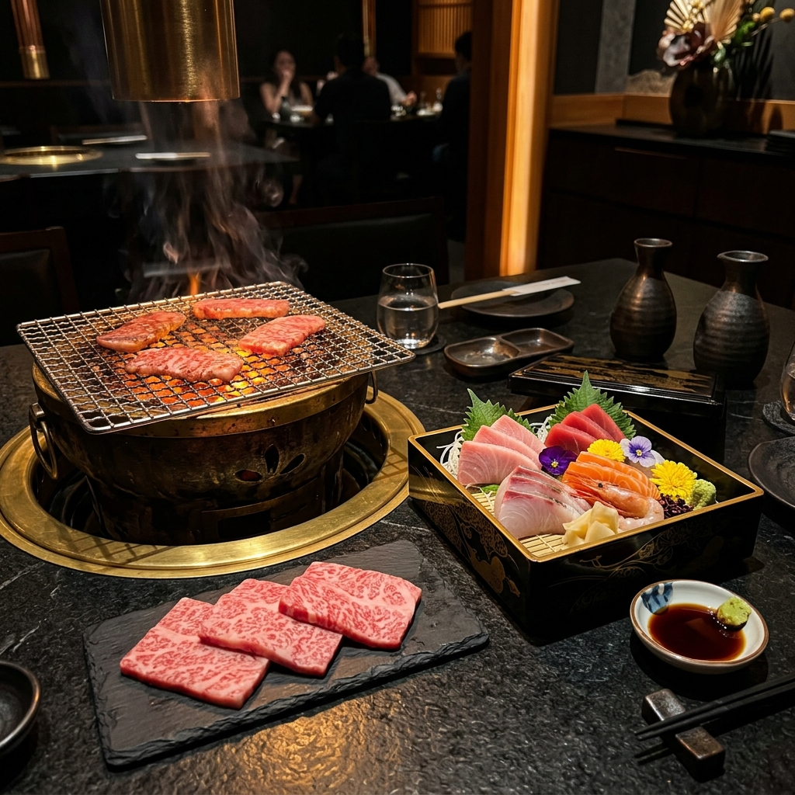

一
厳選された食材
厳しい目利きで選び抜いた特上ブランド牛肉と、日本全国の四季折々の海と山から届く極上の国産素材。素材本来の生命力を最大限に引き出します。
The Harmony of Exquisite Meat and Washoku, Right Here.

二つの美食が交差する、至高の真髄
厳しい目利きで選び抜いた特上ブランド牛肉と、日本全国の四季折々の海と山から届く極上の国産素材。素材本来の生命力を最大限に引き出します。
絶妙な火加減で肉の旨味を閉じ込める豪快な炭火焼きと、職人が一刀一刀に魂を込めて仕立てる端正な和食。対照的な二つの技が、唯一無二の調べを奏でます。
伝統的な和のデザインに現代的なエッセンスを注ぎ込んだ、静謐な和モダン空間。日常の喧騒を忘れ、美食と対話に深く没頭できる極上のひとときをお約束します。
洗練された大人のための空間
特別な一日を、極上の時間で彩る
ビジネスにおける重要なご商談や、社外の特別なゲストをお迎えするおもてなしの席に。静謐な完全個室が確かな信頼関係を築きます。
お誕生日やご長寿のお祝い、ご親族の特別な日の集まりに。お料理内容のご相談やサプライズのお手伝いなど、心を込めてサポートいたします。
シックな漆黒の空間と鈍く光る真鍮色の調度が、大人のロマンチックな夜を演出。大切な人と極上の料理を愉しむ最高のひとときを提供します。
当店を訪れたお客様からの温かい言葉
「大切な取引先の接待で懐石コースを利用しました。お肉も魚も本当に素晴らしく、ゲストの方も大変喜んでおられました。静かな個室の雰囲気も格別で、ここぞという時の切り札になる名店です。」
40代・ビジネス接待でのご利用
「主人の誕生日に焼肉のアラカルトをいただきました。厚切りタンの柔らかさには感動しました。漆黒の落ち着いた空間がとてもおしゃれで、特別な日の食事が一層素晴らしい思い出になりました。」
30代・特別な記念日でのご利用
ご来店にあたっての疑問に誠実にお答えします
はい、可能です。当店は焼肉と和食の両方を同一のお席でお愉しみいただけるユニークなスタイルを採用しております。お連れ様とお好きなメニューをそれぞれお選びいただけます。
はい、可能な限り柔軟に対応させていただきます。出汁をベースとした和食料理が多いため、特定の食材やアレルギーがある場合は、ご予約の際に事前にお申し付けください。職人が特別に仕立てます。
はい、個室のご指定や、庭園を望むお席などのご要望も承っております。ただし、お部屋数に限りがございますので、大切な日のご予約はできるだけお早めにご連絡いただけますと幸いです。
はい、現金のほか、主要なクレジットカード（Visa, Master, JCB, AMEX, Diners）や、各種QRコード決済（PayPayなど）をご利用いただけます。
松山市の中心部に佇む、大人の隠れ家
極上の肉と和の響き。大切な人と、心ゆくまで贅沢なひとときを。